As our final multivariate method, let’s apply cluster analysis to our data. This will allow us to use our subset of variables to find clusters of teams in multidimensional space. Then, we can analyze these clusters for common characteristics and potential predictions of tournament success.
To start, let’s complete some hierarchial cluster analyses with various distance and agglomeration methods. To do so, we create a generalized data set and function, try several different metric combinations, and analyze the results, choosing an appropriate number of clusters and considering their meaning.
First, let’s consider using a basic Euclidean distance metric along with complete linkage. We can see that this results in a well-structured dendrogram with distinct clusters and a relatively “bushy” tree. Now, considering the number of clusters to retain, we visually see either \(3\) or \(4\) distinct subtrees we could separate into. However, looking at the plot below, we see that the RSSTD statistic seems to take a local minimum value at around \(3\), where the SPR and RS graphs also seem to flatten out. Upon trying both \(3\) and \(4\) clusters, \(3\) seemed to provide a better degree of separation between groups in both principal component and discriminant function space, confirming \(3\) groups as the correct choice.
Now, considering potential interpretations for these clusters, we see that Cluster 1 has a high proportion of teams who ended up with low seeds and a high number of tournament games played, implying that the characteristics of this group yield general tournament success. Cluster 2 is the largest group, encompassing teams with many different seeds and varying levels of tournament success. However, this group does contain the eventual champion Virginia, as well as the runner-up Texas Tech; thus, this group could also contain high achieving teams. Cluster 3 seems to contain mostly higher-seeded teams that only played a few tournament games, with notable standouts of Auburn and Purdue. However, being grouped with these teams would generally imply a lesser overall quality and hence lower chance of success.
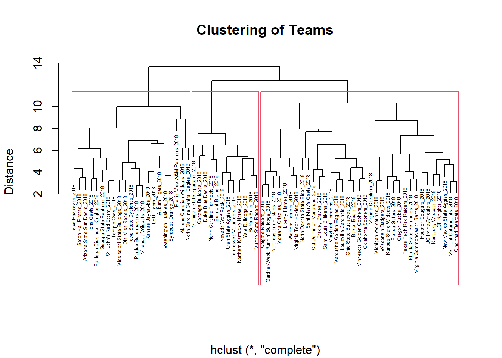
## [1] "Teams in Cluster 1"
## [1] "North Carolina Tar Heels_2018 Seed: 1 Tourn Games Played: 3"
## [2] "Utah State Aggies_2018 Seed: 8 Tourn Games Played: 1"
## [3] "Buffalo Bulls_2018 Seed: 6 Tourn Games Played: 2"
## [4] "Nevada Wolf Pack_2018 Seed: 7 Tourn Games Played: 1"
## [5] "Gonzaga Bulldogs_2018 Seed: 1 Tourn Games Played: 4"
## [6] "Murray State Racers_2018 Seed: 12 Tourn Games Played: 2"
## [7] "Northern Kentucky Norse_2018 Seed: 14 Tourn Games Played: 1"
## [8] "Yale Bulldogs_2018 Seed: 14 Tourn Games Played: 1"
## [9] "Duke Blue Devils_2018 Seed: 1 Tourn Games Played: 4"
## [10] "Belmont Bruins_2018 Seed: 11 Tourn Games Played: 2"
## [11] "Michigan State Spartans_2018 Seed: 2 Tourn Games Played: 5"
## [12] "Tennessee Volunteers_2018 Seed: 2 Tourn Games Played: 3"
## [1] " "
## [1] "Teams in Cluster 2"
## [1] "Houston Cougars_2018 Seed: 3 Tourn Games Played: 3"
## [2] "Wofford Terriers_2018 Seed: 7 Tourn Games Played: 2"
## [3] "Northeastern Huskies_2018 Seed: 13 Tourn Games Played: 1"
## [4] "New Mexico State Aggies_2018 Seed: 12 Tourn Games Played: 1"
## [5] "Ohio State Buckeyes_2018 Seed: 11 Tourn Games Played: 2"
## [6] "Kentucky Wildcats_2018 Seed: 2 Tourn Games Played: 4"
## [7] "Michigan Wolverines_2018 Seed: 2 Tourn Games Played: 3"
## [8] "Baylor Bears_2018 Seed: 9 Tourn Games Played: 2"
## [9] "Vermont Catamounts_2018 Seed: 13 Tourn Games Played: 1"
## [10] "Florida State Seminoles_2018 Seed: 4 Tourn Games Played: 3"
## [11] "Florida Gators_2018 Seed: 10 Tourn Games Played: 2"
## [12] "Montana Grizzlies_2018 Seed: 15 Tourn Games Played: 1"
## [13] "Marquette Golden Eagles_2018 Seed: 5 Tourn Games Played: 1"
## [14] "Texas Tech Red Raiders_2018 Seed: 3 Tourn Games Played: 6"
## [15] "Bradley Braves_2018 Seed: 15 Tourn Games Played: 1"
## [16] "Saint Louis Billikens_2018 Seed: 13 Tourn Games Played: 1"
## [17] "Maryland Terrapins_2018 Seed: 6 Tourn Games Played: 2"
## [18] "UCF Knights_2018 Seed: 9 Tourn Games Played: 2"
## [19] "Minnesota Golden Gophers_2018 Seed: 10 Tourn Games Played: 2"
## [20] "Louisville Cardinals_2018 Seed: 7 Tourn Games Played: 1"
## [21] "Virginia Tech Hokies_2018 Seed: 4 Tourn Games Played: 3"
## [22] "North Dakota State Bison_2018 Seed: 16 Tourn Games Played: 2"
## [23] "Liberty Flames_2018 Seed: 12 Tourn Games Played: 2"
## [24] "Virginia Commonwealth Rams_2018 Seed: 8 Tourn Games Played: 1"
## [25] "Colgate Raiders_2018 Seed: 15 Tourn Games Played: 1"
## [26] "Wisconsin Badgers_2018 Seed: 5 Tourn Games Played: 1"
## [27] "Saint Mary's Gaels_2018 Seed: 11 Tourn Games Played: 1"
## [28] "Kansas State Wildcats_2018 Seed: 4 Tourn Games Played: 1"
## [29] "Virginia Cavaliers_2018 Seed: 1 Tourn Games Played: 6"
## [30] "Cincinnati Bearcats_2018 Seed: 7 Tourn Games Played: 1"
## [31] "Gardner-Webb Runnin' Bulldogs_2018 Seed: 16 Tourn Games Played: 1"
## [32] "Old Dominion Monarchs_2018 Seed: 14 Tourn Games Played: 1"
## [33] "Oregon Ducks_2018 Seed: 12 Tourn Games Played: 3"
## [34] "Oklahoma Sooners_2018 Seed: 9 Tourn Games Played: 2"
## [35] "UC Irvine Anteaters_2018 Seed: 13 Tourn Games Played: 2"
## [1] " "
## [1] "Teams in Cluster 3"
## [1] "Iona Gaels_2018 Seed: 16 Tourn Games Played: 1"
## [2] "Seton Hall Pirates_2018 Seed: 10 Tourn Games Played: 1"
## [3] "Georgia State Panthers_2018 Seed: 14 Tourn Games Played: 1"
## [4] "Auburn Tigers_2018 Seed: 5 Tourn Games Played: 5"
## [5] "Kansas Jayhawks_2018 Seed: 4 Tourn Games Played: 2"
## [6] "Washington Huskies_2018 Seed: 9 Tourn Games Played: 2"
## [7] "Abilene Christian Wildcats_2018 Seed: 15 Tourn Games Played: 1"
## [8] "Iowa State Cyclones_2018 Seed: 6 Tourn Games Played: 1"
## [9] "Prairie View A&M Panthers_2018 Seed: 16 Tourn Games Played: 1"
## [10] "St. John's Red Storm_2018 Seed: 11 Tourn Games Played: 1"
## [11] "Fairleigh Dickinson Knights_2018 Seed: 16 Tourn Games Played: 2"
## [12] "Syracuse Orange_2018 Seed: 8 Tourn Games Played: 1"
## [13] "Arizona State Sun Devils_2018 Seed: 11 Tourn Games Played: 2"
## [14] "North Carolina Central Eagles_2018 Seed: 16 Tourn Games Played: 1"
## [15] "Mississippi State Bulldogs_2018 Seed: 5 Tourn Games Played: 1"
## [16] "Temple Owls_2018 Seed: 11 Tourn Games Played: 1"
## [17] "LSU Tigers_2018 Seed: 3 Tourn Games Played: 3"
## [18] "Purdue Boilermakers_2018 Seed: 3 Tourn Games Played: 4"
## [19] "Iowa Hawkeyes_2018 Seed: 10 Tourn Games Played: 2"
## [20] "Ole Miss Rebels_2018 Seed: 8 Tourn Games Played: 1"
## [21] "Villanova Wildcats_2018 Seed: 6 Tourn Games Played: 2"
## [1] " "
## [1] "Creating Distance Matrix using euclidean"
## [1] "Clustering using complete"
## [1] "Clustering Complete. Access the Cluster object in first element of output"
## [1] "Calculating RMSSTD"
## [1] "RMSSTD Done. Access in Element 2"
## [1] "Calculating RSQ"
## [1] "RSQ Done. Access in Element 3"
## [1] "Calculating SPRSQ"
## [1] "SPRSQ Done. Access in Element 4"
## [1] "Calculating Cluster Dist. "
## [1] "CD Done. Access in Element 5"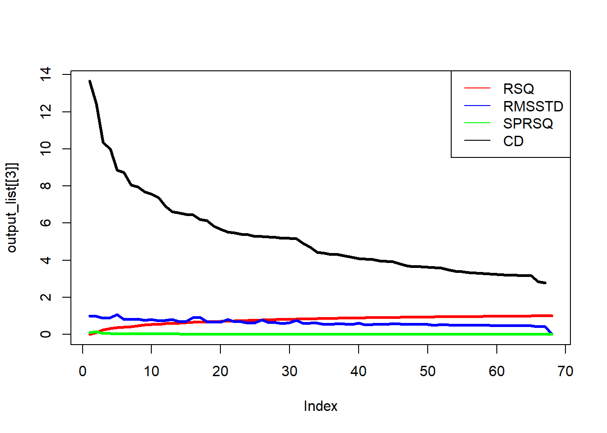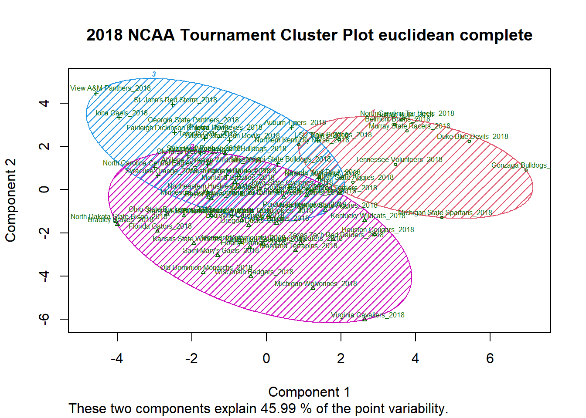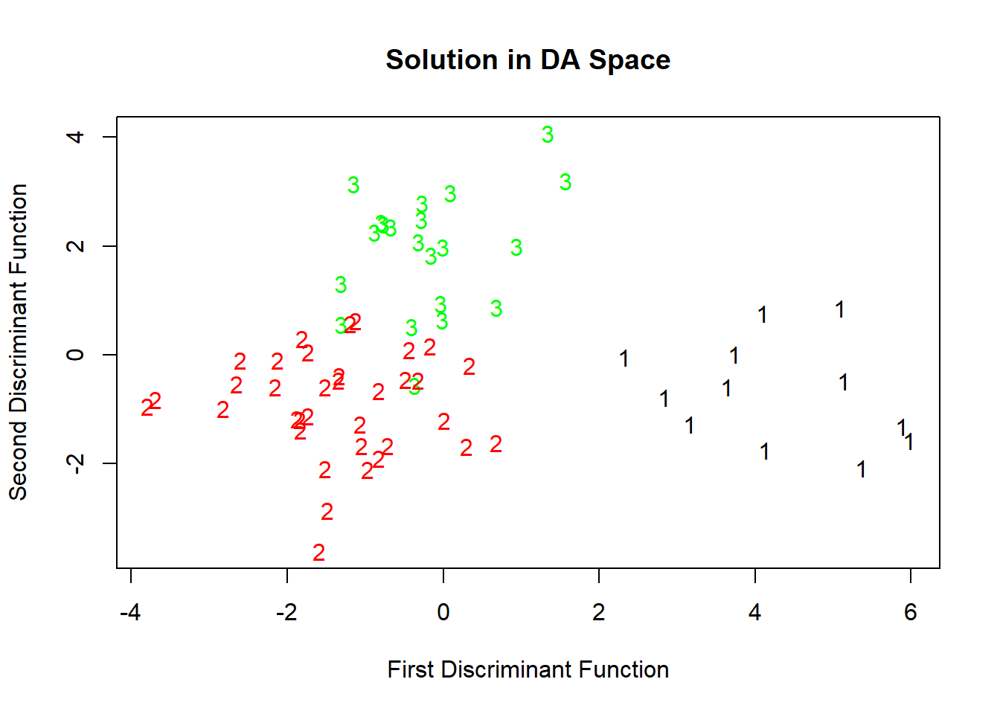
Now, to consider other distance metrics, let’s try using Manhattan distance while keeping complete linkage agglomeration. In this case, we see a much more extented dendrogram in terms of greatest distance between clusters, though it visually has similar levels of bushiness. In terms of number of clusters to retain, this tree is much more ambiguous, as all the plotted metrics are very flat, with few extrema. From the tree structure, there seems to be \(5\) significant subtrees (a cluster count where the RS plot seems to flatten out a bit as well), so we decide to keep \(5\) clusters. Additionally, while the approximate confidence ellipses overlap significantly at any cluster count over \(2\), the discriminant function plot retains a large level of separation for our choice of \(5\) groups.
Compared to the Euclidean distance results, the groups here are quite different (which is obviously a result of additional groups as well). This Cluster 1 (note: the group order does not matter) contains some of the low seed teams, like North Carolina, as well as some of the highest performing teams, like Texas Tech. However, it also has some middle seed teams with only a game or two played, so it is not a surefire success group. The second group generally has high seed teams with few games played, with the notable exception of the Kentucky Wildcats. However, being in this group generally implies a lower level of success. Cluster 3 contains even more lowly teams, with mostly double-digit seeds and single games played (notably Fairleigh Dickinson played \(2\) games but one was a play-in game). Cluster 4 has similar characteristics to Cluster 3 with slightly higher performance, even including eventual champion Virginia (implying Virginia’s unique characteristics among successful teams). However, being in either of these groups generally implies a low level of team success (don’t pick these teams for your bracket unless they are truly top seeds). On the other hand, Cluster 5 is comprised of generally successful teams with low seeds and many games played.
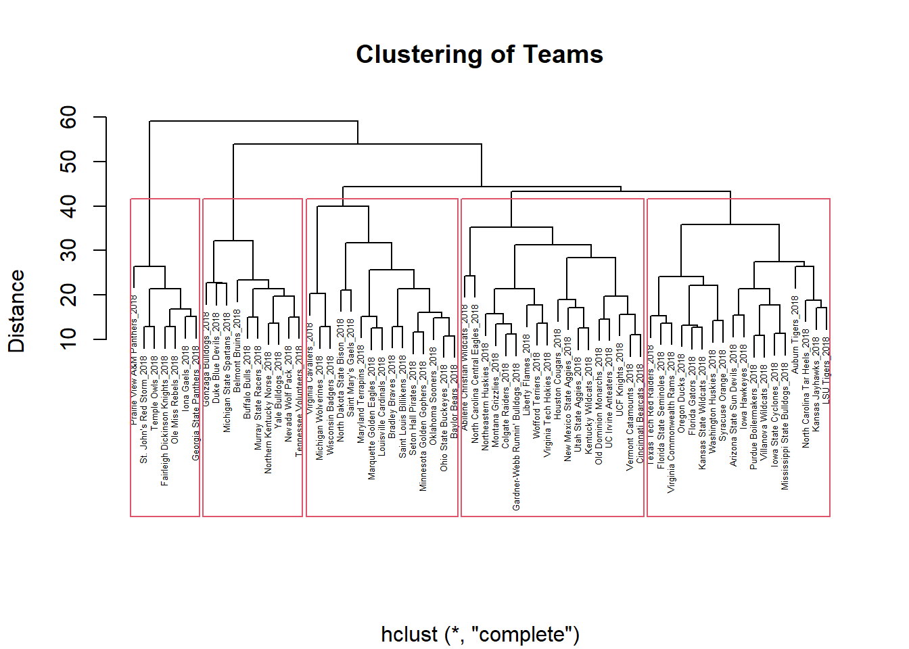
## [1] "Teams in Cluster 1"
## [1] "North Carolina Tar Heels_2018 Seed: 1 Tourn Games Played: 3"
## [2] "Auburn Tigers_2018 Seed: 5 Tourn Games Played: 5"
## [3] "Kansas Jayhawks_2018 Seed: 4 Tourn Games Played: 2"
## [4] "Washington Huskies_2018 Seed: 9 Tourn Games Played: 2"
## [5] "Iowa State Cyclones_2018 Seed: 6 Tourn Games Played: 1"
## [6] "Florida State Seminoles_2018 Seed: 4 Tourn Games Played: 3"
## [7] "Florida Gators_2018 Seed: 10 Tourn Games Played: 2"
## [8] "Texas Tech Red Raiders_2018 Seed: 3 Tourn Games Played: 6"
## [9] "Syracuse Orange_2018 Seed: 8 Tourn Games Played: 1"
## [10] "Arizona State Sun Devils_2018 Seed: 11 Tourn Games Played: 2"
## [11] "Mississippi State Bulldogs_2018 Seed: 5 Tourn Games Played: 1"
## [12] "Virginia Commonwealth Rams_2018 Seed: 8 Tourn Games Played: 1"
## [13] "LSU Tigers_2018 Seed: 3 Tourn Games Played: 3"
## [14] "Purdue Boilermakers_2018 Seed: 3 Tourn Games Played: 4"
## [15] "Kansas State Wildcats_2018 Seed: 4 Tourn Games Played: 1"
## [16] "Iowa Hawkeyes_2018 Seed: 10 Tourn Games Played: 2"
## [17] "Villanova Wildcats_2018 Seed: 6 Tourn Games Played: 2"
## [18] "Oregon Ducks_2018 Seed: 12 Tourn Games Played: 3"
## [1] " "
## [1] "Teams in Cluster 2"
## [1] "Houston Cougars_2018 Seed: 3 Tourn Games Played: 3"
## [2] "Utah State Aggies_2018 Seed: 8 Tourn Games Played: 1"
## [3] "Wofford Terriers_2018 Seed: 7 Tourn Games Played: 2"
## [4] "Northeastern Huskies_2018 Seed: 13 Tourn Games Played: 1"
## [5] "Abilene Christian Wildcats_2018 Seed: 15 Tourn Games Played: 1"
## [6] "New Mexico State Aggies_2018 Seed: 12 Tourn Games Played: 1"
## [7] "Kentucky Wildcats_2018 Seed: 2 Tourn Games Played: 4"
## [8] "Vermont Catamounts_2018 Seed: 13 Tourn Games Played: 1"
## [9] "Montana Grizzlies_2018 Seed: 15 Tourn Games Played: 1"
## [10] "UCF Knights_2018 Seed: 9 Tourn Games Played: 2"
## [11] "North Carolina Central Eagles_2018 Seed: 16 Tourn Games Played: 1"
## [12] "Virginia Tech Hokies_2018 Seed: 4 Tourn Games Played: 3"
## [13] "Liberty Flames_2018 Seed: 12 Tourn Games Played: 2"
## [14] "Colgate Raiders_2018 Seed: 15 Tourn Games Played: 1"
## [15] "Cincinnati Bearcats_2018 Seed: 7 Tourn Games Played: 1"
## [16] "Gardner-Webb Runnin' Bulldogs_2018 Seed: 16 Tourn Games Played: 1"
## [17] "Old Dominion Monarchs_2018 Seed: 14 Tourn Games Played: 1"
## [18] "UC Irvine Anteaters_2018 Seed: 13 Tourn Games Played: 2"
## [1] " "
## [1] "Teams in Cluster 3"
## [1] "Iona Gaels_2018 Seed: 16 Tourn Games Played: 1"
## [2] "Georgia State Panthers_2018 Seed: 14 Tourn Games Played: 1"
## [3] "Prairie View A&M Panthers_2018 Seed: 16 Tourn Games Played: 1"
## [4] "St. John's Red Storm_2018 Seed: 11 Tourn Games Played: 1"
## [5] "Fairleigh Dickinson Knights_2018 Seed: 16 Tourn Games Played: 2"
## [6] "Temple Owls_2018 Seed: 11 Tourn Games Played: 1"
## [7] "Ole Miss Rebels_2018 Seed: 8 Tourn Games Played: 1"
## [1] " "
## [1] "Teams in Cluster 4"
## [1] "Seton Hall Pirates_2018 Seed: 10 Tourn Games Played: 1"
## [2] "Ohio State Buckeyes_2018 Seed: 11 Tourn Games Played: 2"
## [3] "Michigan Wolverines_2018 Seed: 2 Tourn Games Played: 3"
## [4] "Baylor Bears_2018 Seed: 9 Tourn Games Played: 2"
## [5] "Marquette Golden Eagles_2018 Seed: 5 Tourn Games Played: 1"
## [6] "Bradley Braves_2018 Seed: 15 Tourn Games Played: 1"
## [7] "Saint Louis Billikens_2018 Seed: 13 Tourn Games Played: 1"
## [8] "Maryland Terrapins_2018 Seed: 6 Tourn Games Played: 2"
## [9] "Minnesota Golden Gophers_2018 Seed: 10 Tourn Games Played: 2"
## [10] "Louisville Cardinals_2018 Seed: 7 Tourn Games Played: 1"
## [11] "North Dakota State Bison_2018 Seed: 16 Tourn Games Played: 2"
## [12] "Wisconsin Badgers_2018 Seed: 5 Tourn Games Played: 1"
## [13] "Saint Mary's Gaels_2018 Seed: 11 Tourn Games Played: 1"
## [14] "Virginia Cavaliers_2018 Seed: 1 Tourn Games Played: 6"
## [15] "Oklahoma Sooners_2018 Seed: 9 Tourn Games Played: 2"
## [1] " "
## [1] "Teams in Cluster 5"
## [1] "Buffalo Bulls_2018 Seed: 6 Tourn Games Played: 2"
## [2] "Nevada Wolf Pack_2018 Seed: 7 Tourn Games Played: 1"
## [3] "Gonzaga Bulldogs_2018 Seed: 1 Tourn Games Played: 4"
## [4] "Murray State Racers_2018 Seed: 12 Tourn Games Played: 2"
## [5] "Northern Kentucky Norse_2018 Seed: 14 Tourn Games Played: 1"
## [6] "Yale Bulldogs_2018 Seed: 14 Tourn Games Played: 1"
## [7] "Duke Blue Devils_2018 Seed: 1 Tourn Games Played: 4"
## [8] "Belmont Bruins_2018 Seed: 11 Tourn Games Played: 2"
## [9] "Michigan State Spartans_2018 Seed: 2 Tourn Games Played: 5"
## [10] "Tennessee Volunteers_2018 Seed: 2 Tourn Games Played: 3"
## [1] " "
## [1] "Creating Distance Matrix using manhattan"
## [1] "Clustering using complete"
## [1] "Clustering Complete. Access the Cluster object in first element of output"
## [1] "Calculating RMSSTD"
## [1] "RMSSTD Done. Access in Element 2"
## [1] "Calculating RSQ"
## [1] "RSQ Done. Access in Element 3"
## [1] "Calculating SPRSQ"
## [1] "SPRSQ Done. Access in Element 4"
## [1] "Calculating Cluster Dist. "
## [1] "CD Done. Access in Element 5"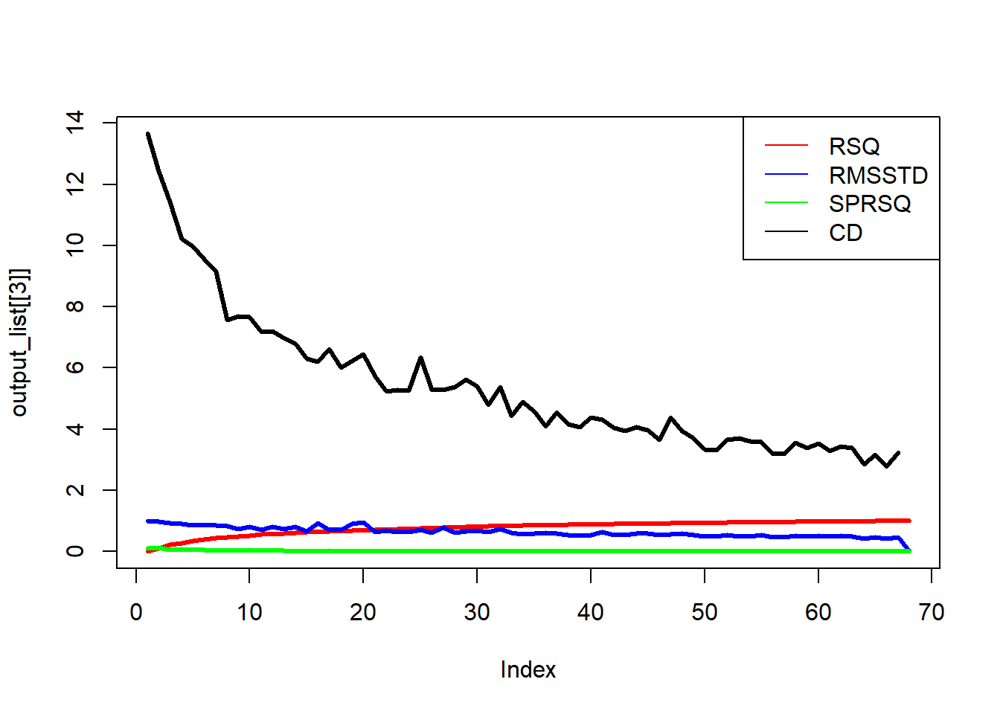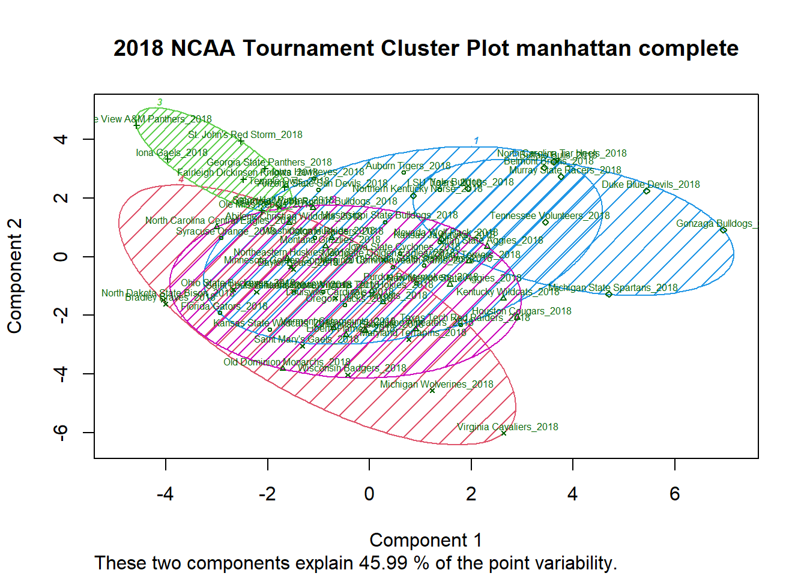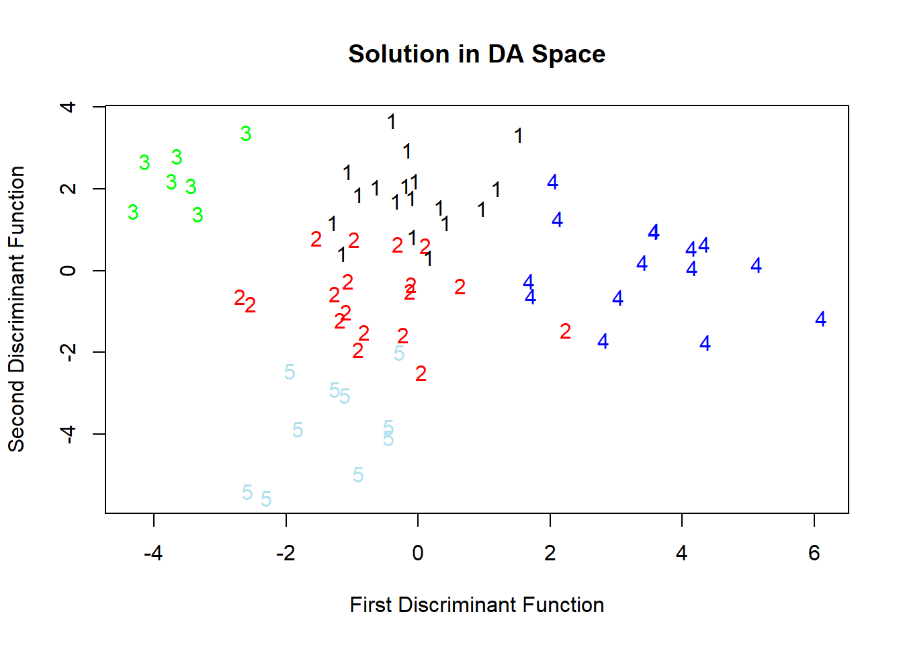
In this case, we see a very “stringy, chain-like” dendrogram that is very sensitive to outliers. Each successive grouping seems to add only one team or a small subtree, so the number of clusters is relatively arbitrary (as evidenced by the flat plots up to high cluster numbers). Adding additional clusters similarly adds the next most “unique” team, generally those of highest and lowest seeds (with anything up to \(5\) clusters, the individual teams are \(1\) and \(16\) seeds, with the seed numbers growing upwards and downwards, respectively, after that). Since choosing \(8\) clusters depicts the greatest outliers, such as tournament favorite Duke and biggest underdog North Carolina Central, and several very successful teams, such as Michigan State and Auburn, we will retain \(8\) clusters.
Now, while this method is useless in terms of creating larger groups with similar characteristics, it is actually incredibly useful for predicting tournament results. By picking out the outliers, it not only outlines pre-tournament favorites and “non-favorites” but also seems to predict outliers in terms of tournament success. Most notably, we see Auburn is among these \(1\)-team groups, one of the Cinderella or surprise teams who went far in the tournament despite having a relatively high seed. Thus this technique may be very useful for picking out successful teams (ignoring the abnormally “bad” teams and admitting a bias towards pre-tournament favorites).
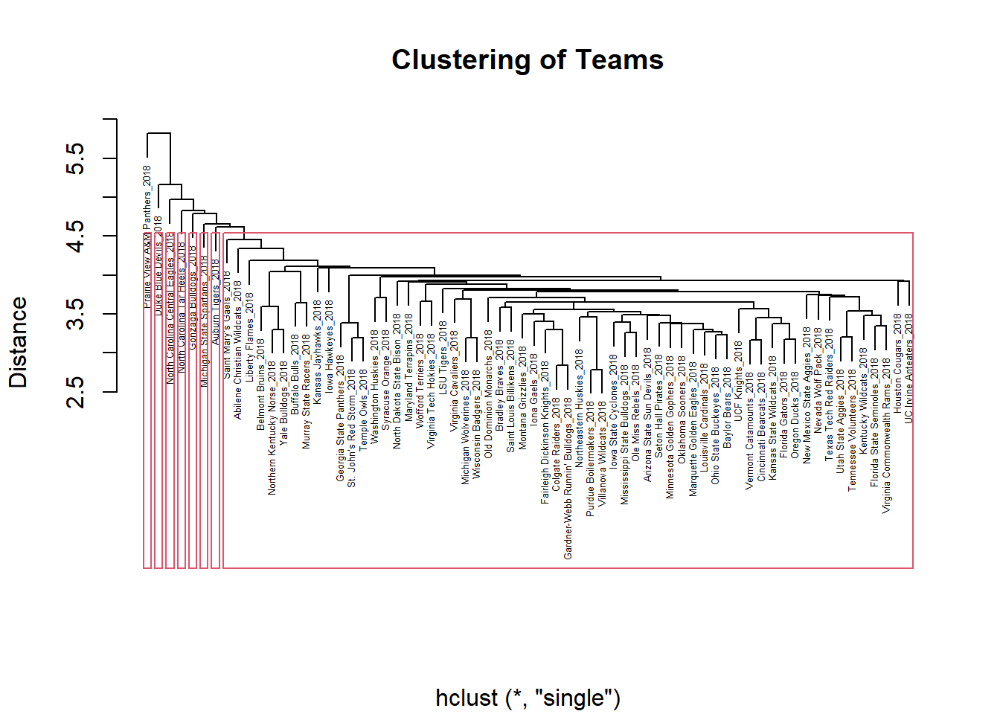
## [1] "Teams in Cluster 1"
## [1] "North Carolina Tar Heels_2018 Seed: 1 Tourn Games Played: 3"
## [1] " "
## [1] "Teams in Cluster 2"
## [1] "Houston Cougars_2018 Seed: 3 Tourn Games Played: 3"
## [2] "Iona Gaels_2018 Seed: 16 Tourn Games Played: 1"
## [3] "Utah State Aggies_2018 Seed: 8 Tourn Games Played: 1"
## [4] "Seton Hall Pirates_2018 Seed: 10 Tourn Games Played: 1"
## [5] "Georgia State Panthers_2018 Seed: 14 Tourn Games Played: 1"
## [6] "Wofford Terriers_2018 Seed: 7 Tourn Games Played: 2"
## [7] "Northeastern Huskies_2018 Seed: 13 Tourn Games Played: 1"
## [8] "Kansas Jayhawks_2018 Seed: 4 Tourn Games Played: 2"
## [9] "Washington Huskies_2018 Seed: 9 Tourn Games Played: 2"
## [10] "Abilene Christian Wildcats_2018 Seed: 15 Tourn Games Played: 1"
## [11] "New Mexico State Aggies_2018 Seed: 12 Tourn Games Played: 1"
## [12] "Iowa State Cyclones_2018 Seed: 6 Tourn Games Played: 1"
## [13] "Ohio State Buckeyes_2018 Seed: 11 Tourn Games Played: 2"
## [14] "Kentucky Wildcats_2018 Seed: 2 Tourn Games Played: 4"
## [15] "Buffalo Bulls_2018 Seed: 6 Tourn Games Played: 2"
## [16] "Michigan Wolverines_2018 Seed: 2 Tourn Games Played: 3"
## [17] "Baylor Bears_2018 Seed: 9 Tourn Games Played: 2"
## [18] "Vermont Catamounts_2018 Seed: 13 Tourn Games Played: 1"
## [19] "Florida State Seminoles_2018 Seed: 4 Tourn Games Played: 3"
## [20] "Florida Gators_2018 Seed: 10 Tourn Games Played: 2"
## [21] "St. John's Red Storm_2018 Seed: 11 Tourn Games Played: 1"
## [22] "Montana Grizzlies_2018 Seed: 15 Tourn Games Played: 1"
## [23] "Marquette Golden Eagles_2018 Seed: 5 Tourn Games Played: 1"
## [24] "Nevada Wolf Pack_2018 Seed: 7 Tourn Games Played: 1"
## [25] "Fairleigh Dickinson Knights_2018 Seed: 16 Tourn Games Played: 2"
## [26] "Murray State Racers_2018 Seed: 12 Tourn Games Played: 2"
## [27] "Texas Tech Red Raiders_2018 Seed: 3 Tourn Games Played: 6"
## [28] "Syracuse Orange_2018 Seed: 8 Tourn Games Played: 1"
## [29] "Arizona State Sun Devils_2018 Seed: 11 Tourn Games Played: 2"
## [30] "Northern Kentucky Norse_2018 Seed: 14 Tourn Games Played: 1"
## [31] "Bradley Braves_2018 Seed: 15 Tourn Games Played: 1"
## [32] "Saint Louis Billikens_2018 Seed: 13 Tourn Games Played: 1"
## [33] "Maryland Terrapins_2018 Seed: 6 Tourn Games Played: 2"
## [34] "UCF Knights_2018 Seed: 9 Tourn Games Played: 2"
## [35] "Yale Bulldogs_2018 Seed: 14 Tourn Games Played: 1"
## [36] "Minnesota Golden Gophers_2018 Seed: 10 Tourn Games Played: 2"
## [37] "Louisville Cardinals_2018 Seed: 7 Tourn Games Played: 1"
## [38] "Virginia Tech Hokies_2018 Seed: 4 Tourn Games Played: 3"
## [39] "Belmont Bruins_2018 Seed: 11 Tourn Games Played: 2"
## [40] "North Dakota State Bison_2018 Seed: 16 Tourn Games Played: 2"
## [41] "Mississippi State Bulldogs_2018 Seed: 5 Tourn Games Played: 1"
## [42] "Temple Owls_2018 Seed: 11 Tourn Games Played: 1"
## [43] "Liberty Flames_2018 Seed: 12 Tourn Games Played: 2"
## [44] "Virginia Commonwealth Rams_2018 Seed: 8 Tourn Games Played: 1"
## [45] "LSU Tigers_2018 Seed: 3 Tourn Games Played: 3"
## [46] "Purdue Boilermakers_2018 Seed: 3 Tourn Games Played: 4"
## [47] "Colgate Raiders_2018 Seed: 15 Tourn Games Played: 1"
## [48] "Wisconsin Badgers_2018 Seed: 5 Tourn Games Played: 1"
## [49] "Saint Mary's Gaels_2018 Seed: 11 Tourn Games Played: 1"
## [50] "Kansas State Wildcats_2018 Seed: 4 Tourn Games Played: 1"
## [51] "Virginia Cavaliers_2018 Seed: 1 Tourn Games Played: 6"
## [52] "Tennessee Volunteers_2018 Seed: 2 Tourn Games Played: 3"
## [53] "Cincinnati Bearcats_2018 Seed: 7 Tourn Games Played: 1"
## [54] "Iowa Hawkeyes_2018 Seed: 10 Tourn Games Played: 2"
## [55] "Ole Miss Rebels_2018 Seed: 8 Tourn Games Played: 1"
## [56] "Gardner-Webb Runnin' Bulldogs_2018 Seed: 16 Tourn Games Played: 1"
## [57] "Villanova Wildcats_2018 Seed: 6 Tourn Games Played: 2"
## [58] "Old Dominion Monarchs_2018 Seed: 14 Tourn Games Played: 1"
## [59] "Oregon Ducks_2018 Seed: 12 Tourn Games Played: 3"
## [60] "Oklahoma Sooners_2018 Seed: 9 Tourn Games Played: 2"
## [61] "UC Irvine Anteaters_2018 Seed: 13 Tourn Games Played: 2"
## [1] " "
## [1] "Teams in Cluster 3"
## [1] "Auburn Tigers_2018 Seed: 5 Tourn Games Played: 5"
## [1] " "
## [1] "Teams in Cluster 4"
## [1] "Prairie View A&M Panthers_2018 Seed: 16 Tourn Games Played: 1"
## [1] " "
## [1] "Teams in Cluster 5"
## [1] "Gonzaga Bulldogs_2018 Seed: 1 Tourn Games Played: 4"
## [1] " "
## [1] "Teams in Cluster 6"
## [1] "Duke Blue Devils_2018 Seed: 1 Tourn Games Played: 4"
## [1] " "
## [1] "Teams in Cluster 7"
## [1] "North Carolina Central Eagles_2018 Seed: 16 Tourn Games Played: 1"
## [1] " "
## [1] "Teams in Cluster 8"
## [1] "Michigan State Spartans_2018 Seed: 2 Tourn Games Played: 5"
## [1] " "
## [1] "Creating Distance Matrix using euclidean"
## [1] "Clustering using single"
## [1] "Clustering Complete. Access the Cluster object in first element of output"
## [1] "Calculating RMSSTD"
## [1] "RMSSTD Done. Access in Element 2"
## [1] "Calculating RSQ"
## [1] "RSQ Done. Access in Element 3"
## [1] "Calculating SPRSQ"
## [1] "SPRSQ Done. Access in Element 4"
## [1] "Calculating Cluster Dist. "
## [1] "CD Done. Access in Element 5"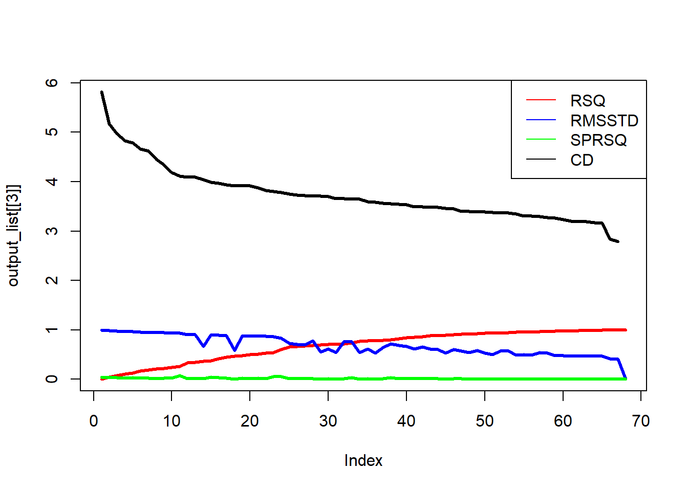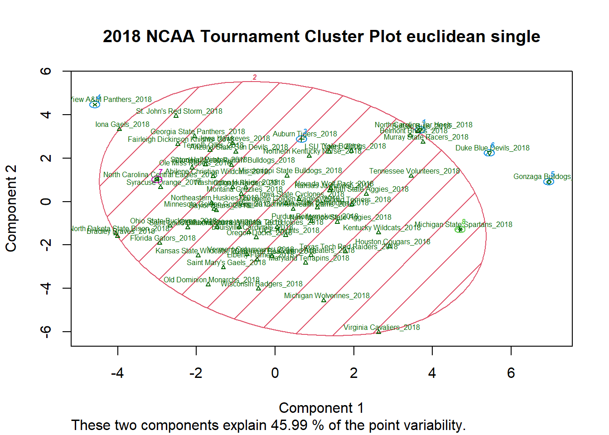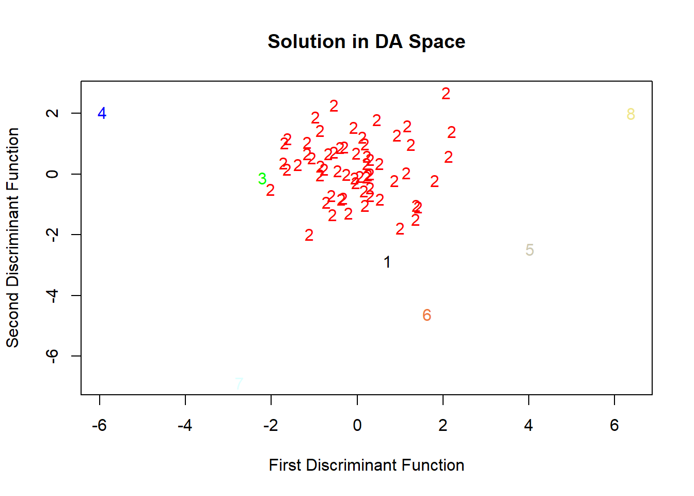
While the hierarchial cluster analysis above was incredibly useful, it would also be very informative to look at a much greater pool of teams from multiple years. This is technically possible using the techniques above, but here we will do it in a much easier and quicker way using k-means cluster analysis.
Below, using a modified version of the script by Matt Peeples, we complete k-means cluster analysis on all the tournament teams with complete data from the 2014-15 to 2018-19 seasons. Looking at the two plots provided by this script, we see that the sum of squares vs. number of clusters flattens out at about \(3\) (for log scale) or \(4\) (for normal scale) clusters. Since the \(4\) cluster solution is more interesting to interpret and still shows significant distinction on the principal component and discriminating function plots, we choose to retain \(4\) clusters.
In this case, we see that Cluster 1 contains mostly middle seeds with mediocre tournament performance, with the exception of some “Cinderella” Final Four teams like 7 seed Michigan State in 2014-15, 10 seed Syracuse in 2015-16, and 7 seed South Carolina in 2016-17. Looking at the cluster means, we see that Cluster 1 has significantly lower adjusted averages for most offensive statistics (points, true shooting percentage, efficiency, etc.). However, their defensive statistics (opponent points, true shooting percentage, efficiency, etc.) are relatively average, with means of about \(0\). Interestingly, while their adjusted winning percentage is expectedly low, their opponent winning percentage and strength of schedule are high, along with slightly above average RPI values. This implies that these teams are quality defensive teams with mediocre offenses who come from strong conferences. While their tournament performances are not stellar, membership in this group does imply the possibility of being a “Cinderella” team.
Cluster 2 teams generally seem to have lower seeds and better tournament performance, but there are still teams of all sorts. However, we see one champion in 2018-19 Virginia and three runner-ups in 2018-19 Texas Tech, 2017-18 Michigan, and 2014-15 Wisconsin, implying the possibility of strong performance. Despite this success, this cluster seems to have low offensive statistics, with the lowest points and efficiency. However, they have by far the strongest defensive statistics, with adjusted opponent points and efficiency means around \(-1\). Finally, their composite statistics (adjusted winning percentage, opponent winning percentage, strength of schedule, RPI) are slightly below average, probably due to the large range of teams. Overall, the hallmark of this group is strong defense, which seemingly can allow for both outstanding and mediocre tournament performances.
Then, Cluster 3 is by far the lowest performing with the highest seeds, containing few exceptions. Fittingly, this is also the largest group, including many teams eliminated in the first two rounds. This cluster has generally mediocre offensive statistics along with poor defensive statistics. Furthermore, all of their composite statistics are significantly below average, implying both low performance and lowly competition. The only major exception comes from the 2018-19 Auburn team, which reached the Final Four, but this team is a known outlier from our previous clusters and thus does not seem to imply any silver lining for this low-performing group.
On the other hand, Cluster 4 is the highest performing and lowest-seed cluster, including the fewest early eliminations, two champions in 2015-16 and 2017-18 Villanova, and two runner-ups in 2015-16 North Carolina and 2016-17 Gonzaga. Likewise, these teams are the most well-rounded statistically, having very high offensive performance and generally strong defense as well. Notably, their composite statistics are also generally the highest, implying strong performance against good (if not always great) competition. If we were to pick a decisive “winner” group, this would be it.
Interestingly, these groups are all similarly-sized, perhaps reflecting some of the classic “randomness” of the tournament. But the existence of such clear and interpretable groups imply that there are significant patterns, even across multiple years (albeit with some expected “noise” in each cluster).
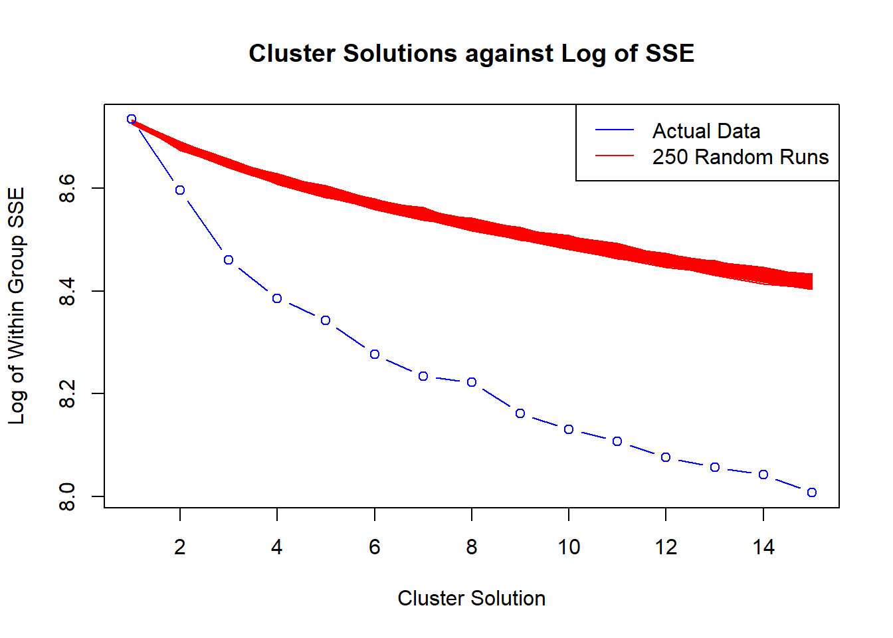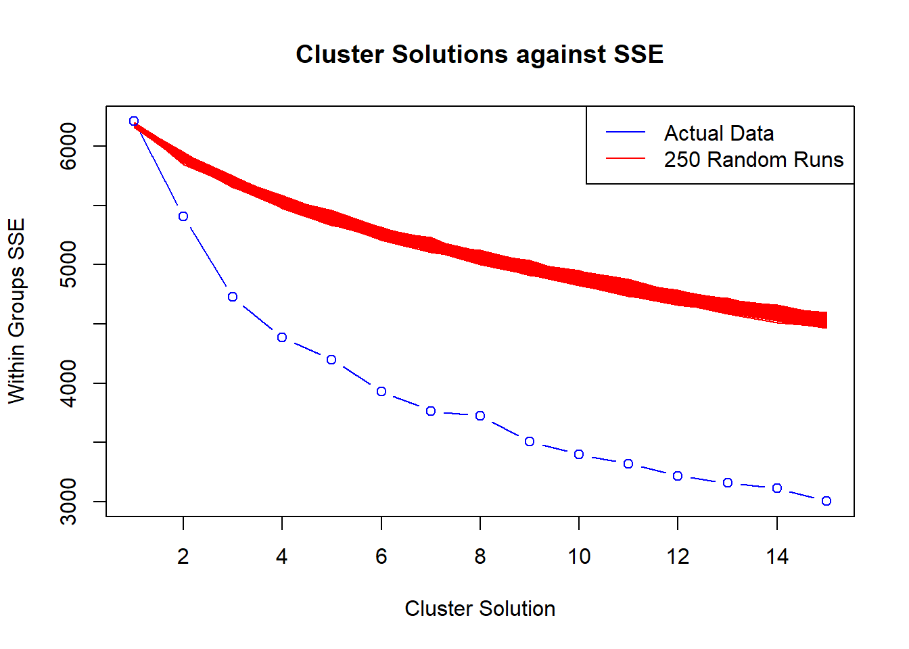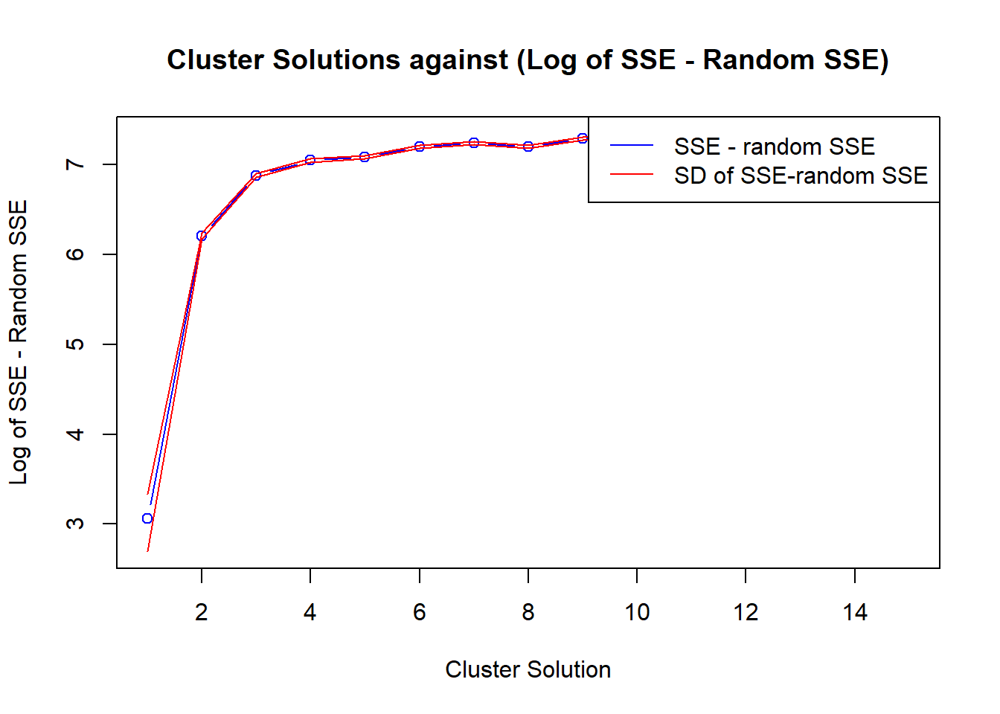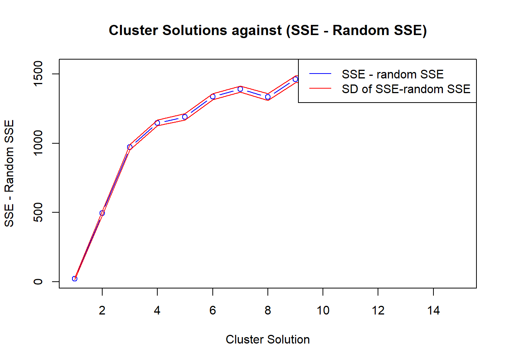
## Cluster Means| Group.1 | points | rebounds | assists | steals | blocks | turnovers |
|---|---|---|---|---|---|---|
| 1 | -0.5032 | 0.2012 | -0.4455 | -0.2928 | 0.5748 | 0.1457 |
| 2 | -0.9847 | -0.6809 | -0.6242 | -0.2778 | -0.3852 | -0.6683 |
| 3 | 0.333 | -0.3571 | 0.01092 | 0.5068 | -0.4066 | 0.4395 |
| 4 | 0.9111 | 0.8081 | 0.9472 | -0.09954 | 0.2534 | -0.1228 |
| personal_fouls | true_shooting_pct | points_in_paint | fast_break_pts |
|---|---|---|---|
| 0.03828 | -0.6133 | -0.3789 | -0.03697 |
| -0.7452 | -0.1463 | -0.7457 | -0.696 |
| 0.6358 | -0.02872 | 0.1783 | 0.1865 |
| -0.193 | 0.7616 | 0.7783 | 0.3899 |
| points_off_turnovers | efficiency | opp_points | opp_rebounds | opp_assists |
|---|---|---|---|---|
| -0.5477 | -0.456 | -0.08196 | 0.2317 | 0.1291 |
| -0.2578 | -0.7312 | -1.097 | -0.7799 | -0.78 |
| 0.4896 | -0.08409 | 0.7785 | 0.6343 | 0.5605 |
| 0.1558 | 1.163 | 0.04481 | -0.3527 | -0.1612 |
| opp_turnovers | opp_personal_fouls | opp_true_shooting_pct | opp_efficiency |
|---|---|---|---|
| -0.3732 | 0.1042 | -0.3611 | 0.05695 |
| -0.3842 | -0.7148 | -0.3679 | -0.8779 |
| 0.6758 | 0.2512 | 0.8878 | 0.7776 |
| -0.1383 | 0.1874 | -0.4234 | -0.274 |
| awp | owp | sos | rpi |
|---|---|---|---|
| -0.6015 | 0.7289 | 0.7363 | 0.1977 |
| 0.2631 | -0.2583 | -0.2635 | -0.04167 |
| -0.4575 | -0.6594 | -0.6497 | -0.7778 |
| 0.9325 | 0.3048 | 0.2901 | 0.7921 |
## [1] "Teams in Cluster 1"
## [1] "Kansas Jayhawks_2018 Seed: 4 Tourn Games Played: 2"
## [2] "Washington Huskies_2018 Seed: 9 Tourn Games Played: 2"
## [3] "Iowa State Cyclones_2018 Seed: 6 Tourn Games Played: 1"
## [4] "Ohio State Buckeyes_2018 Seed: 11 Tourn Games Played: 2"
## [5] "Baylor Bears_2018 Seed: 9 Tourn Games Played: 2"
## [6] "Florida State Seminoles_2018 Seed: 4 Tourn Games Played: 3"
## [7] "Marquette Golden Eagles_2018 Seed: 5 Tourn Games Played: 1"
## [8] "Syracuse Orange_2018 Seed: 8 Tourn Games Played: 1"
## [9] "Saint Louis Billikens_2018 Seed: 13 Tourn Games Played: 1"
## [10] "Maryland Terrapins_2018 Seed: 6 Tourn Games Played: 2"
## [11] "UCF Knights_2018 Seed: 9 Tourn Games Played: 2"
## [12] "Minnesota Golden Gophers_2018 Seed: 10 Tourn Games Played: 2"
## [13] "Louisville Cardinals_2018 Seed: 7 Tourn Games Played: 1"
## [14] "Mississippi State Bulldogs_2018 Seed: 5 Tourn Games Played: 1"
## [15] "Virginia Commonwealth Rams_2018 Seed: 8 Tourn Games Played: 1"
## [16] "Purdue Boilermakers_2018 Seed: 3 Tourn Games Played: 4"
## [17] "Villanova Wildcats_2018 Seed: 6 Tourn Games Played: 2"
## [18] "Oklahoma Sooners_2018 Seed: 9 Tourn Games Played: 2"
## [19] "Syracuse Orange_2017 Seed: 11 Tourn Games Played: 4"
## [20] "Clemson Tigers_2017 Seed: 5 Tourn Games Played: 3"
## [21] "Texas Longhorns_2017 Seed: 10 Tourn Games Played: 1"
## [22] "Tennessee Volunteers_2017 Seed: 3 Tourn Games Played: 2"
## [23] "Kentucky Wildcats_2017 Seed: 5 Tourn Games Played: 3"
## [24] "Miami (FL) Hurricanes_2017 Seed: 6 Tourn Games Played: 1"
## [25] "Missouri Tigers_2017 Seed: 8 Tourn Games Played: 1"
## [26] "Texas A&M Aggies_2017 Seed: 7 Tourn Games Played: 3"
## [27] "UCLA Bruins_2017 Seed: 11 Tourn Games Played: 1"
## [28] "Alabama Crimson Tide_2017 Seed: 9 Tourn Games Played: 2"
## [29] "Texas Tech Red Raiders_2017 Seed: 3 Tourn Games Played: 4"
## [30] "Florida Gators_2017 Seed: 6 Tourn Games Played: 2"
## [31] "Providence Friars_2016 Seed: 11 Tourn Games Played: 1"
## [32] "Baylor Bears_2016 Seed: 3 Tourn Games Played: 3"
## [33] "Florida Gators_2016 Seed: 4 Tourn Games Played: 4"
## [34] "South Carolina Gamecocks_2016 Seed: 7 Tourn Games Played: 5"
## [35] "Michigan State Spartans_2016 Seed: 9 Tourn Games Played: 2"
## [36] "Rhode Island Rams_2016 Seed: 11 Tourn Games Played: 2"
## [37] "Vanderbilt Commodores_2016 Seed: 9 Tourn Games Played: 1"
## [38] "Xavier Musketeers_2016 Seed: 11 Tourn Games Played: 4"
## [39] "Northwestern Wildcats_2016 Seed: 8 Tourn Games Played: 2"
## [40] "Minnesota Golden Gophers_2016 Seed: 5 Tourn Games Played: 1"
## [41] "Seton Hall Pirates_2016 Seed: 9 Tourn Games Played: 1"
## [42] "Duke Blue Devils_2015 Seed: 4 Tourn Games Played: 3"
## [43] "Saint Joseph's (PA) Hawks_2015 Seed: 8 Tourn Games Played: 2"
## [44] "Syracuse Orange_2015 Seed: 10 Tourn Games Played: 5"
## [45] "Colorado Buffaloes_2015 Seed: 8 Tourn Games Played: 1"
## [46] "Vanderbilt Commodores_2015 Seed: 11 Tourn Games Played: 1"
## [47] "Iowa Hawkeyes_2015 Seed: 7 Tourn Games Played: 2"
## [48] "Connecticut Huskies_2015 Seed: 9 Tourn Games Played: 2"
## [49] "California Golden Bears_2015 Seed: 4 Tourn Games Played: 1"
## [50] "USC Trojans_2015 Seed: 8 Tourn Games Played: 1"
## [51] "Notre Dame Fighting Irish_2015 Seed: 6 Tourn Games Played: 4"
## [52] "Purdue Boilermakers_2014 Seed: 9 Tourn Games Played: 1"
## [53] "Texas Longhorns_2014 Seed: 11 Tourn Games Played: 1"
## [54] "Kansas Jayhawks_2014 Seed: 2 Tourn Games Played: 2"
## [55] "Buffalo Bulls_2014 Seed: 12 Tourn Games Played: 1"
## [56] "St. John's Red Storm_2014 Seed: 9 Tourn Games Played: 1"
## [57] "UAB Blazers_2014 Seed: 14 Tourn Games Played: 2"
## [58] "Georgetown Hoyas_2014 Seed: 4 Tourn Games Played: 2"
## [59] "UCLA Bruins_2014 Seed: 11 Tourn Games Played: 3"
## [60] "Oregon Ducks_2014 Seed: 8 Tourn Games Played: 2"
## [61] "Baylor Bears_2014 Seed: 3 Tourn Games Played: 1"
## [62] "Georgia Bulldogs_2014 Seed: 10 Tourn Games Played: 1"
## [63] "Louisville Cardinals_2014 Seed: 4 Tourn Games Played: 4"
## [64] "Oklahoma Sooners_2014 Seed: 3 Tourn Games Played: 3"
## [65] "Providence Friars_2014 Seed: 6 Tourn Games Played: 1"
## [66] "Michigan State Spartans_2014 Seed: 7 Tourn Games Played: 5"
## [1] " "
## [1] "Teams in Cluster 2"
## [1] "Northeastern Huskies_2018 Seed: 13 Tourn Games Played: 1"
## [2] "Michigan Wolverines_2018 Seed: 2 Tourn Games Played: 3"
## [3] "Vermont Catamounts_2018 Seed: 13 Tourn Games Played: 1"
## [4] "Florida Gators_2018 Seed: 10 Tourn Games Played: 2"
## [5] "Texas Tech Red Raiders_2018 Seed: 3 Tourn Games Played: 6"
## [6] "Bradley Braves_2018 Seed: 15 Tourn Games Played: 1"
## [7] "Virginia Tech Hokies_2018 Seed: 4 Tourn Games Played: 3"
## [8] "North Dakota State Bison_2018 Seed: 16 Tourn Games Played: 2"
## [9] "Liberty Flames_2018 Seed: 12 Tourn Games Played: 2"
## [10] "Wisconsin Badgers_2018 Seed: 5 Tourn Games Played: 1"
## [11] "Saint Mary's Gaels_2018 Seed: 11 Tourn Games Played: 1"
## [12] "Kansas State Wildcats_2018 Seed: 4 Tourn Games Played: 1"
## [13] "Virginia Cavaliers_2018 Seed: 1 Tourn Games Played: 6"
## [14] "Cincinnati Bearcats_2018 Seed: 7 Tourn Games Played: 1"
## [15] "Old Dominion Monarchs_2018 Seed: 14 Tourn Games Played: 1"
## [16] "Oregon Ducks_2018 Seed: 12 Tourn Games Played: 3"
## [17] "UC Irvine Anteaters_2018 Seed: 13 Tourn Games Played: 2"
## [18] "Charleston Cougars_2017 Seed: 13 Tourn Games Played: 1"
## [19] "Virginia Cavaliers_2017 Seed: 1 Tourn Games Played: 1"
## [20] "Wright State Raiders_2017 Seed: 14 Tourn Games Played: 1"
## [21] "Davidson Wildcats_2017 Seed: 12 Tourn Games Played: 1"
## [22] "Loyola (IL) Ramblers_2017 Seed: 11 Tourn Games Played: 5"
## [23] "Houston Cougars_2017 Seed: 6 Tourn Games Played: 2"
## [24] "UNC Greensboro Spartans_2017 Seed: 13 Tourn Games Played: 1"
## [25] "Michigan Wolverines_2017 Seed: 3 Tourn Games Played: 6"
## [26] "Radford Highlanders_2017 Seed: 16 Tourn Games Played: 2"
## [27] "SMU Mustangs_2016 Seed: 6 Tourn Games Played: 1"
## [28] "Wisconsin Badgers_2016 Seed: 8 Tourn Games Played: 3"
## [29] "Miami (FL) Hurricanes_2016 Seed: 8 Tourn Games Played: 1"
## [30] "North Carolina Central Eagles_2016 Seed: 16 Tourn Games Played: 1"
## [31] "Vermont Catamounts_2016 Seed: 13 Tourn Games Played: 1"
## [32] "Michigan Wolverines_2016 Seed: 7 Tourn Games Played: 3"
## [33] "Jacksonville State Gamecocks_2016 Seed: 15 Tourn Games Played: 1"
## [34] "Cincinnati Bearcats_2016 Seed: 6 Tourn Games Played: 2"
## [35] "Middle Tennessee Blue Raiders_2016 Seed: 12 Tourn Games Played: 2"
## [36] "Virginia Cavaliers_2015 Seed: 1 Tourn Games Played: 4"
## [37] "Wichita State Shockers_2015 Seed: 11 Tourn Games Played: 3"
## [38] "Wisconsin Badgers_2015 Seed: 7 Tourn Games Played: 3"
## [39] "Valparaiso Crusaders_2014 Seed: 13 Tourn Games Played: 1"
## [40] "Wichita State Shockers_2014 Seed: 7 Tourn Games Played: 3"
## [41] "Cincinnati Bearcats_2014 Seed: 8 Tourn Games Played: 2"
## [42] "Butler Bulldogs_2014 Seed: 6 Tourn Games Played: 2"
## [43] "Maryland Terrapins_2014 Seed: 4 Tourn Games Played: 2"
## [44] "Northeastern Huskies_2014 Seed: 14 Tourn Games Played: 1"
## [45] "North Florida Ospreys_2014 Seed: 16 Tourn Games Played: 1"
## [46] "SMU Mustangs_2014 Seed: 6 Tourn Games Played: 1"
## [47] "Utah Utes_2014 Seed: 5 Tourn Games Played: 3"
## [48] "Coastal Carolina Chanticleers_2014 Seed: 16 Tourn Games Played: 1"
## [49] "Harvard Crimson_2014 Seed: 13 Tourn Games Played: 1"
## [50] "Georgia State Panthers_2014 Seed: 14 Tourn Games Played: 2"
## [51] "Oklahoma State Cowboys_2014 Seed: 9 Tourn Games Played: 1"
## [52] "Wisconsin Badgers_2014 Seed: 1 Tourn Games Played: 6"
## [53] "Dayton Flyers_2014 Seed: 11 Tourn Games Played: 3"
## [54] "Albany Great Danes_2014 Seed: 14 Tourn Games Played: 1"
## [55] "Wyoming Cowboys_2014 Seed: 12 Tourn Games Played: 1"
## [56] "UC Irvine Anteaters_2014 Seed: 13 Tourn Games Played: 1"
## [1] " "
## [1] "Teams in Cluster 3"
## [1] "Iona Gaels_2018 Seed: 16 Tourn Games Played: 1"
## [2] "Seton Hall Pirates_2018 Seed: 10 Tourn Games Played: 1"
## [3] "Georgia State Panthers_2018 Seed: 14 Tourn Games Played: 1"
## [4] "Auburn Tigers_2018 Seed: 5 Tourn Games Played: 5"
## [5] "Abilene Christian Wildcats_2018 Seed: 15 Tourn Games Played: 1"
## [6] "Prairie View A&M Panthers_2018 Seed: 16 Tourn Games Played: 1"
## [7] "St. John's Red Storm_2018 Seed: 11 Tourn Games Played: 1"
## [8] "Montana Grizzlies_2018 Seed: 15 Tourn Games Played: 1"
## [9] "Fairleigh Dickinson Knights_2018 Seed: 16 Tourn Games Played: 2"
## [10] "Arizona State Sun Devils_2018 Seed: 11 Tourn Games Played: 2"
## [11] "Northern Kentucky Norse_2018 Seed: 14 Tourn Games Played: 1"
## [12] "North Carolina Central Eagles_2018 Seed: 16 Tourn Games Played: 1"
## [13] "Temple Owls_2018 Seed: 11 Tourn Games Played: 1"
## [14] "Colgate Raiders_2018 Seed: 15 Tourn Games Played: 1"
## [15] "Iowa Hawkeyes_2018 Seed: 10 Tourn Games Played: 2"
## [16] "Ole Miss Rebels_2018 Seed: 8 Tourn Games Played: 1"
## [17] "Gardner-Webb Runnin' Bulldogs_2018 Seed: 16 Tourn Games Played: 1"
## [18] "Oklahoma Sooners_2017 Seed: 10 Tourn Games Played: 1"
## [19] "Arizona State Sun Devils_2017 Seed: 11 Tourn Games Played: 1"
## [20] "Bucknell Bison_2017 Seed: 14 Tourn Games Played: 1"
## [21] "North Carolina State Wolfpack_2017 Seed: 9 Tourn Games Played: 1"
## [22] "Auburn Tigers_2017 Seed: 4 Tourn Games Played: 2"
## [23] "Iona Gaels_2017 Seed: 15 Tourn Games Played: 1"
## [24] "Seton Hall Pirates_2017 Seed: 8 Tourn Games Played: 2"
## [25] "Pennsylvania Quakers_2017 Seed: 16 Tourn Games Played: 1"
## [26] "Rhode Island Rams_2017 Seed: 7 Tourn Games Played: 2"
## [27] "Kansas State Wildcats_2017 Seed: 9 Tourn Games Played: 4"
## [28] "Georgia State Panthers_2017 Seed: 15 Tourn Games Played: 1"
## [29] "UMBC Retrievers_2017 Seed: 16 Tourn Games Played: 2"
## [30] "San Diego State Aztecs_2017 Seed: 11 Tourn Games Played: 1"
## [31] "Providence Friars_2017 Seed: 10 Tourn Games Played: 1"
## [32] "Texas Southern Tigers_2017 Seed: 16 Tourn Games Played: 2"
## [33] "Florida State Seminoles_2017 Seed: 9 Tourn Games Played: 4"
## [34] "North Carolina Central Eagles_2017 Seed: 16 Tourn Games Played: 1"
## [35] "Montana Grizzlies_2017 Seed: 14 Tourn Games Played: 1"
## [36] "Lipscomb Bisons_2017 Seed: 15 Tourn Games Played: 1"
## [37] "Arkansas Razorbacks_2017 Seed: 7 Tourn Games Played: 1"
## [38] "Stephen F. Austin Lumberjacks_2017 Seed: 14 Tourn Games Played: 1"
## [39] "LIU Brooklyn Blackbirds_2017 Seed: 16 Tourn Games Played: 1"
## [40] "Cal State Fullerton Titans_2017 Seed: 15 Tourn Games Played: 1"
## [41] "West Virginia Mountaineers_2017 Seed: 5 Tourn Games Played: 3"
## [42] "Marshall Thundering Herd_2017 Seed: 13 Tourn Games Played: 2"
## [43] "St. Bonaventure Bonnies_2017 Seed: 11 Tourn Games Played: 2"
## [44] "Virginia Tech Hokies_2017 Seed: 8 Tourn Games Played: 1"
## [45] "Butler Bulldogs_2017 Seed: 10 Tourn Games Played: 2"
## [46] "Troy Trojans_2016 Seed: 15 Tourn Games Played: 1"
## [47] "East Tennessee State Buccaneers_2016 Seed: 13 Tourn Games Played: 1"
## [48] "Mount St. Mary's Mountaineers_2016 Seed: 16 Tourn Games Played: 2"
## [49] "Virginia Tech Hokies_2016 Seed: 9 Tourn Games Played: 1"
## [50] "Marquette Golden Eagles_2016 Seed: 10 Tourn Games Played: 1"
## [51] "New Orleans Privateers_2016 Seed: 16 Tourn Games Played: 1"
## [52] "North Carolina-Wilmington Seahawks_2016 Seed: 12 Tourn Games Played: 1"
## [53] "Iowa State Cyclones_2016 Seed: 5 Tourn Games Played: 2"
## [54] "Iona Gaels_2016 Seed: 14 Tourn Games Played: 1"
## [55] "UC Davis Aggies_2016 Seed: 16 Tourn Games Played: 2"
## [56] "Creighton Bluejays_2016 Seed: 6 Tourn Games Played: 1"
## [57] "Oklahoma State Cowboys_2016 Seed: 10 Tourn Games Played: 1"
## [58] "North Dakota Fighting Hawks_2016 Seed: 15 Tourn Games Played: 1"
## [59] "Bucknell Bison_2016 Seed: 13 Tourn Games Played: 1"
## [60] "West Virginia Mountaineers_2016 Seed: 4 Tourn Games Played: 3"
## [61] "Dayton Flyers_2016 Seed: 7 Tourn Games Played: 1"
## [62] "Northern Kentucky Norse_2016 Seed: 15 Tourn Games Played: 1"
## [63] "Kansas State Wildcats_2016 Seed: 11 Tourn Games Played: 2"
## [64] "Winthrop Eagles_2016 Seed: 13 Tourn Games Played: 1"
## [65] "Kent State Golden Flashes_2016 Seed: 14 Tourn Games Played: 1"
## [66] "Wake Forest Demon Deacons_2016 Seed: 11 Tourn Games Played: 1"
## [67] "Texas Southern Tigers_2016 Seed: 16 Tourn Games Played: 1"
## [68] "Green Bay Phoenix_2015 Seed: 14 Tourn Games Played: 1"
## [69] "Oregon State Beavers_2015 Seed: 7 Tourn Games Played: 1"
## [70] "North Carolina-Wilmington Seahawks_2015 Seed: 13 Tourn Games Played: 1"
## [71] "Cal State Bakersfield Roadrunners_2015 Seed: 15 Tourn Games Played: 1"
## [72] "Iona Gaels_2015 Seed: 13 Tourn Games Played: 1"
## [73] "Hampton Pirates_2015 Seed: 16 Tourn Games Played: 1"
## [74] "UNC Asheville Bulldogs_2015 Seed: 15 Tourn Games Played: 1"
## [75] "Buffalo Bulls_2015 Seed: 14 Tourn Games Played: 1"
## [76] "Austin Peay Governors_2015 Seed: 16 Tourn Games Played: 1"
## [77] "West Virginia Mountaineers_2014 Seed: 5 Tourn Games Played: 3"
## [78] "Manhattan Jaspers_2014 Seed: 16 Tourn Games Played: 1"
## [79] "Robert Morris Colonials_2014 Seed: 16 Tourn Games Played: 2"
## [80] "Arkansas Razorbacks_2014 Seed: 5 Tourn Games Played: 2"
## [81] "BYU Cougars_2014 Seed: 11 Tourn Games Played: 1"
## [82] "Belmont Bruins_2014 Seed: 15 Tourn Games Played: 1"
## [1] " "
## [1] "Teams in Cluster 4"
## [1] "North Carolina Tar Heels_2018 Seed: 1 Tourn Games Played: 3"
## [2] "Houston Cougars_2018 Seed: 3 Tourn Games Played: 3"
## [3] "Utah State Aggies_2018 Seed: 8 Tourn Games Played: 1"
## [4] "Wofford Terriers_2018 Seed: 7 Tourn Games Played: 2"
## [5] "New Mexico State Aggies_2018 Seed: 12 Tourn Games Played: 1"
## [6] "Kentucky Wildcats_2018 Seed: 2 Tourn Games Played: 4"
## [7] "Buffalo Bulls_2018 Seed: 6 Tourn Games Played: 2"
## [8] "Nevada Wolf Pack_2018 Seed: 7 Tourn Games Played: 1"
## [9] "Gonzaga Bulldogs_2018 Seed: 1 Tourn Games Played: 4"
## [10] "Murray State Racers_2018 Seed: 12 Tourn Games Played: 2"
## [11] "Yale Bulldogs_2018 Seed: 14 Tourn Games Played: 1"
## [12] "Duke Blue Devils_2018 Seed: 1 Tourn Games Played: 4"
## [13] "Belmont Bruins_2018 Seed: 11 Tourn Games Played: 2"
## [14] "Michigan State Spartans_2018 Seed: 2 Tourn Games Played: 5"
## [15] "LSU Tigers_2018 Seed: 3 Tourn Games Played: 3"
## [16] "Tennessee Volunteers_2018 Seed: 2 Tourn Games Played: 3"
## [17] "Michigan State Spartans_2017 Seed: 3 Tourn Games Played: 2"
## [18] "Duke Blue Devils_2017 Seed: 2 Tourn Games Played: 4"
## [19] "New Mexico State Aggies_2017 Seed: 12 Tourn Games Played: 1"
## [20] "Kansas Jayhawks_2017 Seed: 1 Tourn Games Played: 5"
## [21] "TCU Horned Frogs_2017 Seed: 6 Tourn Games Played: 1"
## [22] "Cincinnati Bearcats_2017 Seed: 2 Tourn Games Played: 2"
## [23] "Arizona Wildcats_2017 Seed: 4 Tourn Games Played: 1"
## [24] "Buffalo Bulls_2017 Seed: 13 Tourn Games Played: 2"
## [25] "Creighton Bluejays_2017 Seed: 8 Tourn Games Played: 1"
## [26] "Nevada Wolf Pack_2017 Seed: 7 Tourn Games Played: 3"
## [27] "Ohio State Buckeyes_2017 Seed: 5 Tourn Games Played: 2"
## [28] "North Carolina Tar Heels_2017 Seed: 2 Tourn Games Played: 2"
## [29] "Gonzaga Bulldogs_2017 Seed: 4 Tourn Games Played: 3"
## [30] "South Dakota State Jackrabbits_2017 Seed: 12 Tourn Games Played: 1"
## [31] "Xavier Musketeers_2017 Seed: 1 Tourn Games Played: 2"
## [32] "Murray State Racers_2017 Seed: 12 Tourn Games Played: 1"
## [33] "Purdue Boilermakers_2017 Seed: 2 Tourn Games Played: 3"
## [34] "Villanova Wildcats_2017 Seed: 1 Tourn Games Played: 6"
## [35] "Wichita State Shockers_2017 Seed: 4 Tourn Games Played: 1"
## [36] "New Mexico State Aggies_2016 Seed: 14 Tourn Games Played: 1"
## [37] "Villanova Wildcats_2016 Seed: 1 Tourn Games Played: 2"
## [38] "Kansas Jayhawks_2016 Seed: 1 Tourn Games Played: 4"
## [39] "Oregon Ducks_2016 Seed: 3 Tourn Games Played: 5"
## [40] "Nevada Wolf Pack_2016 Seed: 12 Tourn Games Played: 1"
## [41] "Purdue Boilermakers_2016 Seed: 4 Tourn Games Played: 3"
## [42] "Florida State Seminoles_2016 Seed: 3 Tourn Games Played: 2"
## [43] "Virginia Commonwealth Rams_2016 Seed: 10 Tourn Games Played: 1"
## [44] "Florida Gulf Coast Eagles_2016 Seed: 14 Tourn Games Played: 1"
## [45] "Gonzaga Bulldogs_2016 Seed: 1 Tourn Games Played: 6"
## [46] "Kentucky Wildcats_2016 Seed: 2 Tourn Games Played: 4"
## [47] "Wichita State Shockers_2016 Seed: 10 Tourn Games Played: 2"
## [48] "Oregon Ducks_2015 Seed: 1 Tourn Games Played: 4"
## [49] "Texas A&M Aggies_2015 Seed: 3 Tourn Games Played: 3"
## [50] "Oklahoma Sooners_2015 Seed: 2 Tourn Games Played: 5"
## [51] "Yale Bulldogs_2015 Seed: 12 Tourn Games Played: 2"
## [52] "Iowa State Cyclones_2015 Seed: 4 Tourn Games Played: 3"
## [53] "Gonzaga Bulldogs_2015 Seed: 11 Tourn Games Played: 3"
## [54] "Utah Utes_2015 Seed: 3 Tourn Games Played: 2"
## [55] "Kansas Jayhawks_2015 Seed: 1 Tourn Games Played: 4"
## [56] "Hawaii Warriors_2015 Seed: 13 Tourn Games Played: 2"
## [57] "Villanova Wildcats_2015 Seed: 2 Tourn Games Played: 6"
## [58] "North Carolina Tar Heels_2015 Seed: 1 Tourn Games Played: 6"
## [59] "Xavier Musketeers_2015 Seed: 2 Tourn Games Played: 2"
## [60] "Stony Brook Seawolves_2015 Seed: 13 Tourn Games Played: 1"
## [61] "Kentucky Wildcats_2014 Seed: 1 Tourn Games Played: 5"
## [62] "Gonzaga Bulldogs_2014 Seed: 2 Tourn Games Played: 4"
## [63] "Iowa State Cyclones_2014 Seed: 3 Tourn Games Played: 1"
## [64] "Stephen F. Austin Lumberjacks_2014 Seed: 12 Tourn Games Played: 1"
## [65] "North Carolina Tar Heels_2014 Seed: 4 Tourn Games Played: 3"
## [66] "Ohio State Buckeyes_2014 Seed: 10 Tourn Games Played: 2"
## [67] "Villanova Wildcats_2014 Seed: 1 Tourn Games Played: 2"
## [1] " "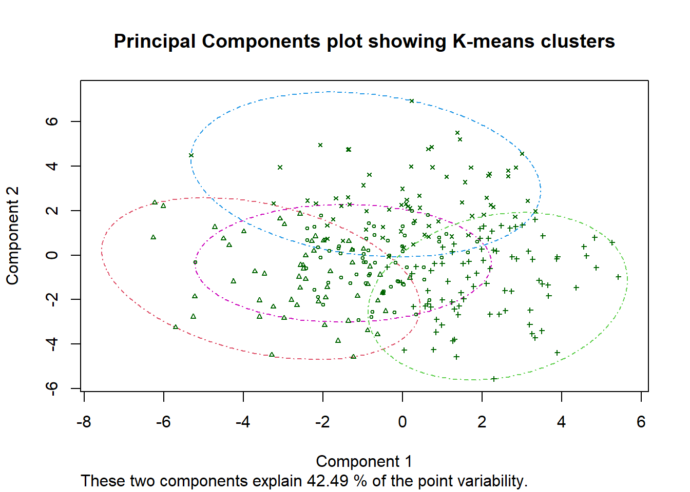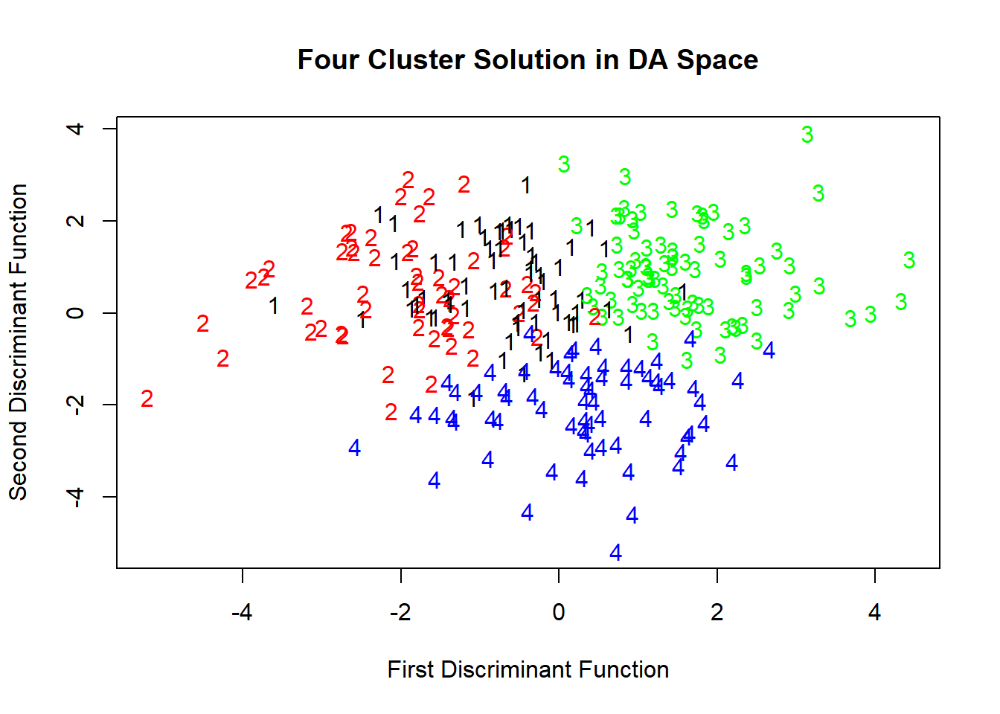